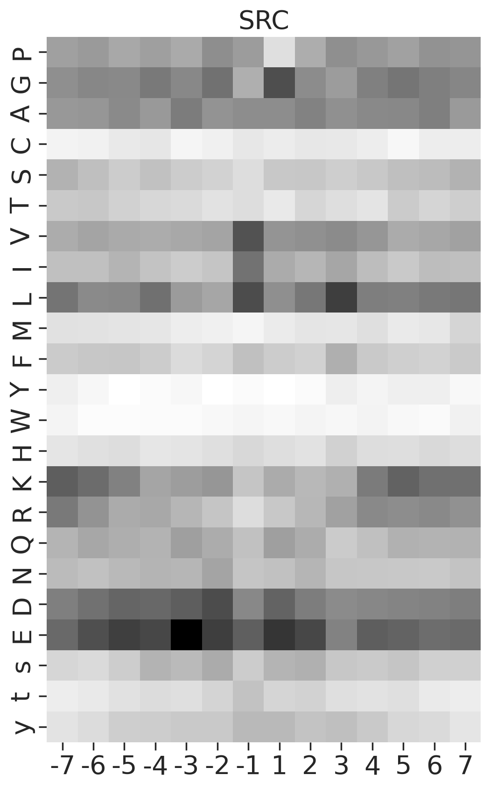
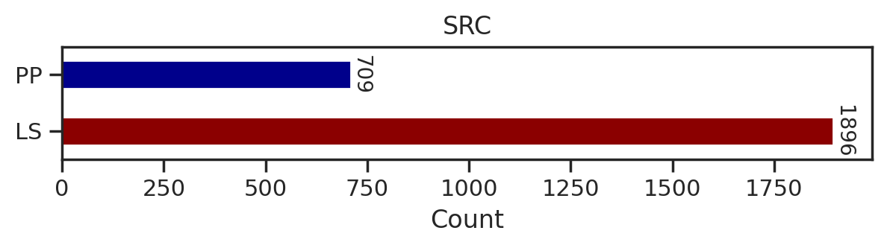
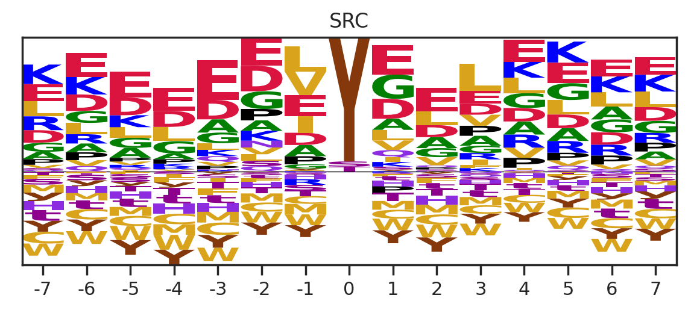
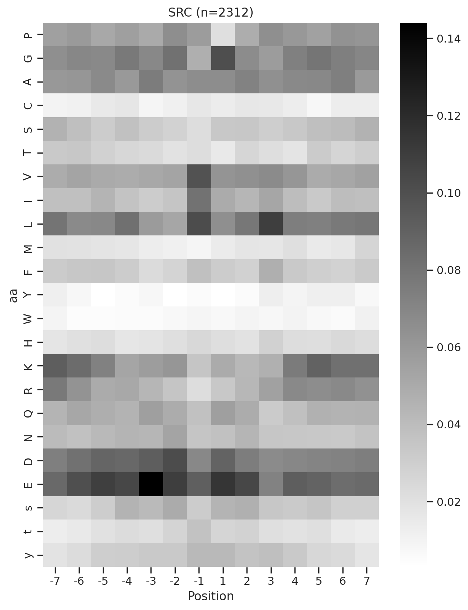
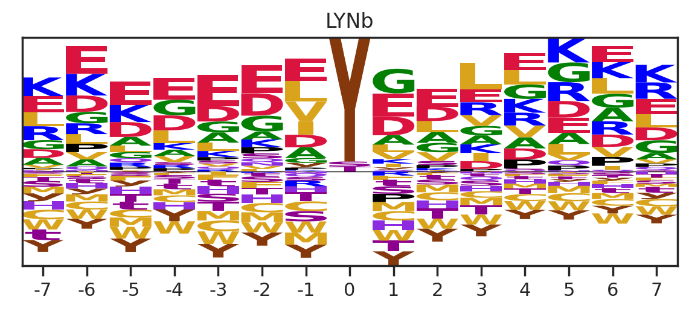
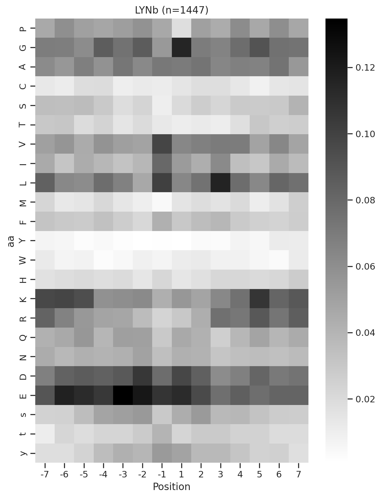

import pandas as pd
import numpy as np
import matplotlib.pyplot as plt
import seaborn as sns
from katlas.core import *
from katlas.plot import *
from scipy.stats import spearmanr, pearsonr
import os
from PIL import Image
from tqdm import tqdmPlot heatmap and logo of CDDM
Setup
def plot_count(df_k,title):
# Get value counts
source_counts = df_k.source.replace({'pplus':'PP','large_scale':'LS'}).value_counts()
plt.figure(figsize=(7,1))
source_counts.plot(kind='barh', stacked=True, color=['darkred', 'darkblue'])
# Annotate with the actual values
for index, value in enumerate(source_counts):
plt.text(value, index, str(value),fontsize=10,rotation=-90, va='center')
plt.xlabel('Count')
plt.title(title)sns.set(rc={"figure.dpi":200, 'savefig.dpi':200})
sns.set_context('notebook')
sns.set_style("ticks")Load data
df = Data.get_ks_dataset()
df['SUB'] = df.substrate.str.upper()info = Data.get_kinase_info().query('pseudo=="0"')# It only contains kinase on the tree
cnt = df.kinase_paper.value_counts()ST = info[info.group!="TK"].kinasedf[df.kinase_paper.isin(ST)].kinase_paper.value_counts()[10:20]NEK6 950
PLK1 943
CK2A1 919
P38D 907
DYRK2 907
HGK 902
TTBK1 896
MST3 890
MST1 884
IKKE 880
Name: kinase_paper, dtype: int64cnt = cnt[cnt>100]Generate example figures
def plot_heatmap2(matrix, title, figsize=(6,10), label_size=20):
plt.figure(figsize=figsize)
sns.heatmap(matrix, cmap='binary', annot=False,cbar=False)
plt.title(title,fontsize=label_size)
# Set the font size for the tick labels
plt.xticks(fontsize=label_size)
plt.yticks(fontsize=label_size)
plt.xlabel('')
plt.ylabel('')kinase_list = ['SRC','ABL1','ERK2','PKACA']sns.set(rc={"figure.dpi":200, 'savefig.dpi':200})
sns.set_context('notebook')
sns.set_style("ticks")
for k in kinase_list:
df_k = df.query(f'kinase=="{k}"')
df_k = df_k.drop_duplicates(subset='SUB').reset_index()
paper,full = get_freq(df_k)
plot_heatmap2(full.drop(columns=[0]),f'{k}',figsize=(6,10))
plt.show()
plt.close()
break
# if you want to generate and save all of figures, uncomment below
# plt.savefig(f'fig/{k}.png',bbox_inches='tight', pad_inches=0.3)
# plt.close()
Generate all figures
Uncomment plt.savefig to save figures
sns.set(rc={"figure.dpi":200, 'savefig.dpi':200})
sns.set_context('notebook')
sns.set_style("ticks")
for k in tqdm(cnt.index,total=len(cnt)):
df_k = df.query(f'kinase=="{k}"')
plot_count(df_k,k)
# plt.savefig(f'fig/count/{k}.png',bbox_inches='tight', pad_inches=0.1)
plt.show() # if visualize in jupyter notebook, uncheck the savefig
plt.close()
df_k = df_k.drop_duplicates(subset='SUB').reset_index()
paper,full = get_freq(df_k)
get_logo2(full, k)
# plt.savefig(f'fig/logo/{k}.png',bbox_inches='tight', pad_inches=0.3)
plt.show()
plt.close()
plot_heatmap(full.drop(columns=[0]),f'{k} (n={len(df_k)})',figsize=(7.5,10))
# plt.savefig(f'fig/heatmap/{k}.png',bbox_inches='tight', pad_inches=0)
plt.show()
plt.close()
# break
break 0%| | 0/289 [00:00<?, ?it/s]


0%| | 0/289 [00:02<?, ?it/s]Combine figures for pdf
def combine_images_vertically(image_paths, output_path):
images = [Image.open(image_path).convert('RGBA') for image_path in image_paths]
total_width = max(image.width for image in images)
total_height = sum(image.height for image in images)
combined_image = Image.new('RGBA', (total_width, total_height))
y_offset = 0
for image in images:
combined_image.paste(image, (0, y_offset), image)
y_offset += image.height
combined_image.save(output_path)Uncomment below to run
# folders = ["fig/count", "fig/logo", "fig/heatmap"]
# for k in tqdm(cnt.index,total=len(cnt)):
# filename = f"{k}.png"
# image_paths = [os.path.join(folder, filename) for folder in folders]
# output_path = f"fig/combine/{k}.png"
# combine_images_vertically(image_paths, output_path)
# # breakGet PSSM data of CDDM
for i,k in enumerate(cnt.index):
df_k = df.query(f'kinase=="{k}"')
df_k = df_k.drop_duplicates(subset='SUB').reset_index()
paper,full = get_freq(df_k)
melt = full.drop(columns = [0]).reset_index().melt(id_vars=['aa'], value_name=k, var_name='Position')
melt['substrate']=melt['Position'].astype(str)+ melt['aa']
position_0 = full[0][['s','t','y']].reset_index().rename(columns={0:k})
position_0['substrate'] = '0'+position_0['aa']
if i ==0:
first = pd.concat([melt,position_0])[['substrate',k]].set_index('substrate')
else:
k = pd.concat([melt,position_0])[['substrate',k]].set_index('substrate')
data = pd.concat([first,k],axis=1)
first = data.copy()
# breakdata = data.T
data.index = data.index.rename('kinase')To save
# data.to_csv('supp/CDDM.csv')
# data.to_parquet('ks_main.parquet')Get specialized CDDM data for all-capital substrates
combine s,t,y to S,T,Y
# List of suffixes
suffixes = ['S', 'T', 'Y']
for suffix in suffixes:
for i in range(-7, 8): # looping from -7 to 7
if i == 0: # Skip 0
continue
upper_col = f"{i}{suffix}" # e.g., -7S
lower_col = f"{i}{suffix.lower()}" # e.g., -7s
data[upper_col] = data[upper_col] + data[lower_col]
data.drop(lower_col, axis=1,inplace=True) # Drop the lowercase column after combiningdata.columns[data.columns.str.contains('S')]Index(['-7S', '-6S', '-5S', '-4S', '-3S', '-2S', '-1S', '1S', '2S', '3S', '4S',
'5S', '6S', '7S'],
dtype='object', name='substrate')# make sure the "s" in positions other than 0 is deleted from the columns
data.columns[data.columns.str.contains('s')]Index(['0s'], dtype='object', name='substrate')# Make sure very position's sum is 1
data.loc[:,data.columns.str.contains('-7')].sum(1).sort_values()kinase
DDR2 1.0
NEK11 1.0
MSK1 1.0
TEK 1.0
NIM1 1.0
...
CAMK2G 1.0
PKG2 1.0
MELK 1.0
NEK1 1.0
TLK2 1.0
Length: 289, dtype: float64data = data.rename(columns={'0s':'0S','0t':'0T','0y':'0Y'})data.index = data.index.rename('kinase')To save
# data.to_parquet('ks_main_upper.parquet')
# data.to_csv('supp/CDDM_upper.csv')Plot other kinases (mutated, lipid kinase, isoforms)
kinases not on kinome tree
cnt_other = df.query('on_tree==0').kinase.value_counts()
cnt_other = cnt_other[cnt_other>100]others = cnt_other.index.tolist()+['LYN','ABL1','RET','FGFR3','PDGFRA','ALK',
'EGFR','KIT','MET','PKCB','BRAF','PKG1'] # BRAF is less than 100Uncheck savefig to save figures
for k in tqdm(others,total=len(others)):
df_k = df.query(f'kinase=="{k}"')
plot_count(df_k,k)
# plt.savefig(f'fig_others/count/{k.replace("/", "_")}.png',bbox_inches='tight', pad_inches=0.1)
plt.show() # if visualize in jupyter notebook, uncheck the savefig
plt.close()
df_k = df_k.drop_duplicates(subset='SUB').reset_index()
paper,full = get_freq(df_k)
get_logo2(full,k)
# plt.savefig(f'fig_others/logo/{k.replace("/", "_")}.png',bbox_inches='tight', pad_inches=0.3)
plt.show()
plt.close()
plot_heatmap(full.drop(columns=[0]),f'{k} (n={len(df_k)})',figsize=(7.5,10))
# plt.savefig(f'fig_others/heatmap/{k.replace("/", "_")}.png',bbox_inches='tight', pad_inches=0)
plt.show()
plt.close()
break 0%| | 0/36 [00:00<?, ?it/s]


0%| | 0/36 [00:01<?, ?it/s]Combine the figures for pdf
Uncomment below to run
# folders = ["fig_others/count", "fig_others/logo", "fig_others/heatmap"]
# for k in tqdm(others,total = len(others)):
# k = k.replace("/", "_")
# filename = f"{k}.png"
# image_paths = [os.path.join(folder, filename) for folder in folders]
# output_path = f"fig_others/combine/{k}.png"
# combine_images_vertically(image_paths, output_path)
# # breakGet the PSSMs of other kinases
for i,k in enumerate(others):
df_k = df.query(f'kinase=="{k}"')
df_k = df_k.drop_duplicates(subset='SUB').reset_index()
paper,full = get_freq(df_k)
melt = full.drop(columns = [0]).reset_index().melt(id_vars=['aa'], value_name=k, var_name='Position')
melt['substrate']=melt['Position'].astype(str)+ melt['aa']
position_0 = full[0][['s','t','y']].reset_index().rename(columns={0:k})
position_0['substrate'] = '0'+position_0['aa']
if i ==0:
first = pd.concat([melt,position_0])[['substrate',k]].set_index('substrate')
else:
k = pd.concat([melt,position_0])[['substrate',k]].set_index('substrate')
data = pd.concat([first,k],axis=1)
first = data.copy()data = data.T
data.index = data.index.rename('kinase')To save:
# data.to_csv('supp/CDDM_others.csv')
# data.to_parquet('ks_others.parquet')